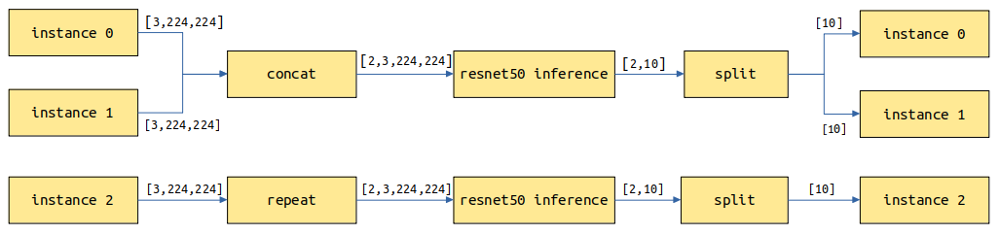

Servable Provided Through Model Configuration
Linux Ascend GPU Serving Beginner Intermediate Expert

Overview
MindSpore Serving supports only the Ascend 310 and Ascend 910 environments.
MindSpore Serving Servable provides the inference services of the following types: One inference service comes from a single model, and the other one comes from a combination of multiple models (this is being developed). Models need to be configured to provide the Serving inference service.
The following describes how to configure a single model to provide Servable. All Servable configurations are for single-model Servables and the Serving client is referred to as the client.
ResNet-50 is used as an example to describe how to configure a model to provide Servable. For details about the sample code, see the ResNet-50 Example.
Concepts
Preprocessing and Post-processing
A model provides the inference capability. Its input and output have fixed data type, data length, and shape.
If data sent from the client cannot directly meet model input requirements, the data needs to be preprocessed and converted into the qualified data. If the model output cannot be not directly provided for the client, post-processing is required to convert the output into the required output data.
The following shows the resnet50 Servable data flowchart. The image data is transmitted from the client to the Serving through a network. The Serving performs preprocessing, inference, and post-processing, and returns the result to the client.
For a ResNet-50 inference model, the data sent by the client is images in JPG or PNG format, and the image classification is expected to be returned. The input of a ResNet model is the tensor generated by operations such as image Decode, Resize, and Normalize. The output is the score tensor of each category. The image needs to be converted into a tensor that meets the model input requirements during preprocessing. Name of the top 1 category or Names of the top 5 categories and their scores are returned after post-processing.
The provided preprocessing may vary according to the composition, structure, or type of data input from the client in different scenarios. The provided post-processing may also vary according to the model output requirements. For example, in the preceding resnet50 Servable, two post-processing methods are provided for the following two scenarios: Name of the top 1 category and Names of the top 5 categories and their scores.
Methods
The preceding resnet Servable provides the classify_top5 and classify_top1 methods. The input of classify_top5 is image, and the output is label and score. The top 5 category names and scores are returned. The preprocessing of classify_top1 is the same as that of classify_top5, but the post-processing is different. The input is image, and the output is label. The top 1 category name is returned.
One Servable can provide one or more methods. The Servable name and the method name are marked with a service provided by the Serving. Each method preprocesses the data provided by the client, performs model inference and optional post-processing on the model inference result, and returns the required result to the client.
A Servable is used to:
Specify optional preprocessing and post-processing.
Define a data flow between method input, preprocessing, model, post-processing, and method output. The former data value can be used as the latter data input. For example, the value of method output may come from the method input, preprocessing, model, or post-processing.
Specify a method name for the client to specify a method to be used.
Specify the input and output names of a method for the client to specify the input and obtain the output.
Instances
Each request includes one or more independent instances which do not affect each other’s result. For example, a category is returned for an image, and three categories are returned for three independent images.
Model Configuration
Take the ResNet-50 model as an example. The model configuration file directory is as follows:
resnet50
├── 1
│ └── resnet_classify.mindir
├── 2
│ └── resnet_classify.mindir
└── servable_config.py
resnet50: a directory, which is named after the Servable name.servable_config.py: configures Servable, including preprocessing and post-processing definitions, model declaration, and method definition.1and2: directories, which indicate models of the1and2versions. The model version is a positive integer starting from1. A larger number indicates a later version.resnet_classify.mindir: a model file. When the Servable is started, the model file of the corresponding version is loaded.
Preprocessing and Post-processing Definition
The following is an example to define preprocessing and post-processing:
import mindspore.dataset as ds
import mindspore.dataset.transforms.c_transforms as TC
import mindspore.dataset.vision.c_transforms as VC
def preprocess_eager(image):
"""
Define preprocess, input is image numpy, return preprocess result.
Return type can be numpy, str, bytes, int, float, or bool.
Use MindData Eager, this image processing can also use other image processing library, likes numpy, PIL or cv2 etc.
"""
image_size = 224
mean = [0.485 * 255, 0.456 * 255, 0.406 * 255]
std = [0.229 * 255, 0.224 * 255, 0.225 * 255]
decode = VC.Decode()
resize = VC.Resize([image_size, image_size])
normalize = VC.Normalize(mean=mean, std=std)
hwc2chw = VC.HWC2CHW()
image = decode(image)
image = resize(image)
image = normalize(image)
image = hwc2chw(image)
return image
def postprocess_top1(score):
"""
Define postprocess. This example has one input and one output.
The input is the numpy tensor of the score, and the output is the label str of top one.
"""
max_idx = np.argmax(score)
return idx_2_label[max_idx]
def postprocess_top5(score):
"""
Define postprocess. This example has one input and two outputs.
The input is the numpy tensor of the score. The first output is the str joined by labels of top five, and the second output is the score tensor of the top five.
"""
idx = np.argsort(score)[::-1][:5] # top 5
ret_label = [idx_2_label[i] for i in idx]
ret_score = score[idx]
return ";".join(ret_label), ret_score
The preprocessing and post-processing are defined in the same format. The input parameters are the input data of each instance. If the input data is a text, the input parameter is a str object. If the input data is of other types, such as Tensor, Scalar number, Boolean, and Bytes, the input parameter is a numpy object. The instance processing result is returned through return, which can be numpy, or a single data object or a tuple consisting of bool, int, float, str, or bytes of Python.
The input sources and output usage of preprocessing and post-processing are determined by the Method Definition.
Model Declaration
The sample code for declaring the resnet50 Servable model is as follows:
from mindspore_serving.worker import register
register.declare_servable(servable_file="resnet50_1b_imagenet.mindir", model_format="MindIR", with_batch_dim=True)
The input parameter servable_file of declare_servable indicates the model file name. model_format indicates the model type. Currently, the Ascend 310 environment supports both OM and MindIR model types. The Ascend 910 environment supports only the MindIR model type.
If the 1D model input and output is not the batch dimension, you need to change the value of with_batch_dim from the default value True to False.
Set with_batch_dim to True if models contain the batch dimension, such as image and text processing models. Assume that batch_size=2 and the current request has three instances of images which will be split into two batches for model inference. For the first batch, two images are inferred to return two results. For the second batch, the remaining image is copied and inferred to return one result. Finally, three results are returned.

Set with_batch_dim to False if models do not involve or consider the batch dimension. For example, the input and output are matrix multiplication models of 2D tensors. Each instance of the request performs an independent inference task.

If a model has one data input with batch dimension information and one model configuration information input without batch dimension information, you need to set with_batch_dim to True and set an extra parameter without_batch_dim_inputs to specify the input information that does not contain the batch dimension information.
For example:
from mindspore_serving.worker import register
# Input1 indicates the input shape information of the model, without the batch dimension information.
# input0: [N,3,416,416], input1: [2]
register.declare_servable(servable_file="yolov3_darknet53.mindir", model_format="MindIR",
with_batch_dim=True, without_batch_dim_inputs=1)
For distributed model, the only difference compared with non-distributed single model configuration is declaration, you need to use declare_distributed_servable method, rank_size is the number of devices used in the model, stage_size is the number of stages in the pipeline.
from mindspore_serving.worker import distributed
from mindspore_serving.worker import register
distributed.declare_distributed_servable(rank_size=8, stage_size=1, with_batch_dim=False)
Method Definition
An example of the method definition is as follows:
from mindspore_serving.worker import register
@register.register_method(output_names=["label"])
def classify_top1(image):
"""Define method `classify_top1` for servable `resnet50`.
The input is `image` and the output is `label`."""
x = register.call_preprocess(preprocess_eager, image)
x = register.call_servable(x)
x = register.call_postprocess(postprocess_top1, x)
return x
@register.register_method(output_names=["label", "score"])
def classify_top5(image):
"""Define method `classify_top5` for servable `resnet50`.
The input is `image` and the output is `label` and `score`. """
x = register.call_preprocess(preprocess_eager, image)
x = register.call_servable(x)
label, score = register.call_postprocess(postprocess_top5, x)
return label, score
The preceding code defines the classify_top1 and classify_top5 methods in Servable resnet50. The input parameter of the classify_top1 method is image and the output parameter is label. The input parameter of the classify_top5 method is image and the output parameters are label and score. That is, the input parameters of the Servable method are specified by the input parameters of the Python method, and the output parameters of the Servable method are specified by output_names of register_method.
In the preceding method definition:
call_preprocessspecifies the preprocessing used and its input.call_servablespecifies the input of model inference.call_postprocessspecifies the post-processing and its input used.returnspecifies the data returned by the method and corresponds to theoutput_namesparameter ofregister_method.
The method definition cannot contain branch structures such as if, for, and while. Preprocessing and post-processing are optional and cannot be repeated. Model inference is mandatory, and the sequence cannot be disordered.
When a user uses a service provided by a Servable method on the client, the user needs to specify the input value based on the input parameter name and identify the output value based on the output parameter name. For example, the method classify_top5 accessed by the client is as follows:
from mindspore_serving.client import Client
def read_images():
# read image file and return
def run_classify_top5():
"""Client for servable resnet50 and method classify_top5"""
client = Client("localhost", 5500, "resnet50", "classify_top5")
instances = []
for image in read_images(): # read multi image
instances.append({"image": image}) # input `image`
result = client.infer(instances)
print(result)
for result_item in result: # result for every image
label = result_item["label"] # result `label`
score = result_item["score"] # result `score`
print("label result", label)
print("score result", score)
if __name__ == '__main__':
run_classify_top5()
In addition, one request may include multiple instances, and multiple requests in queue for processing also have multiple instances. If multiple instances need to be processed concurrently by using, for example, multiple threads in customized preprocessing or post-processing (for example, the MindData concurrency is used to process multiple input images during preprocessing), MindSpore Serving provides call_preprocess_pipeline and call_postprocess_pipeline for registering such preprocessing and post-processing. For details, see ResNet-50 sample model configuration.